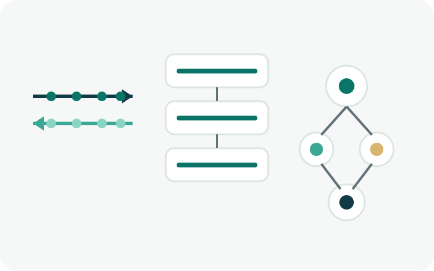
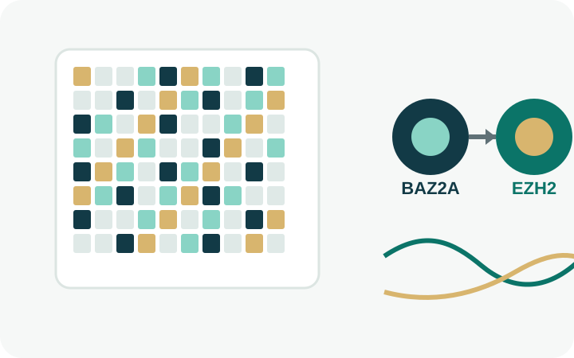

Histone Modification Clocks for Robust Cross-Species Biological Age Prediction and Elucidating Senescence Regulation
Zhixin Niu, Chang Liu, Yurong Fan, Lei Gu.
Zhixin Niu, Chang Liu, Yurong Fan, Lei Gu.

Qihao Duan, Bingding Huang, Zhenqiao Song, Irina Lehmann, Lei Gu, Roland Eils, Benjamin Wild.
Zhaowei Chu, Lei Gu, et al.
Zhaowei Chu, Qihao Duan, Yatao Guo, Wei Cao, Bingding Huang, Wanyu Zheng, Longfei Zhu, Roland Eils, Benjamin Wild, Songmei Geng, Lei Gu.
Manyuan Cheng, Cuiyin Liu, Lei Gu.
Zhixin Niu, Chang Liu, Lei Gu.
Kaimeng Su, Qihao Duan, Wenwen He, Benjamin Wild, Roland Eils, Lei Gu, Xiangjia Zhu.

Yudong Peng, Rui Li, Huan Li, Jun Zhou, Xuanshi Liu, Guilherme Valente, Tatiana de Campos Melo, Sifan Chen, Lei Gu.
Hybrid CNN–Transformer toolkit for transcriptome-wide m6A site prediction, distributed as an installable Python package with command-line and programmatic interfaces.
Leading authorBidirectional DNA foundation model for long genomic sequence representation, with public source code and model resources.
NeurIPS · 2026 · Lead authorBioconductor package for quantitative and differential analysis, clustering and visualisation of epigenomic and transcriptomic time-course sequencing data.
Leading authorR framework for circular genomic visualisation, associated with the 2014 Bioinformatics publication co-authored by Lei Gu.
Bioinformatics · 2014 · Co-authorQi Wang, Lei Gu, et al.

Lei Gu, Sandra C Frommel, Christopher C Oakes, et al.

Mario Andres Blanco, David B. Sykes, Lei Gu, et al.
Lei Gu, Longfei Wang, Hao Chen, et al.
Hao Chen, Lei Gu, et al.
Hao Gu, Youwen Guo, Lei Gu, et al.
Tobias Bauer, Saskia Trump, Naveed Ishaque, Loreen Thürmann, Lei Gu, et al.
Zuguang Gu, Lei Gu, Roland Eils, Matthias Schlesner, Benedikt Brors.